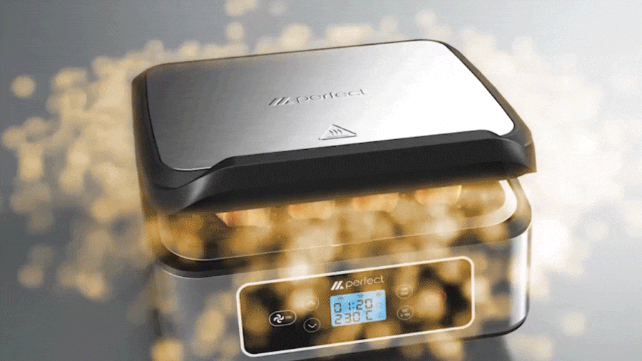
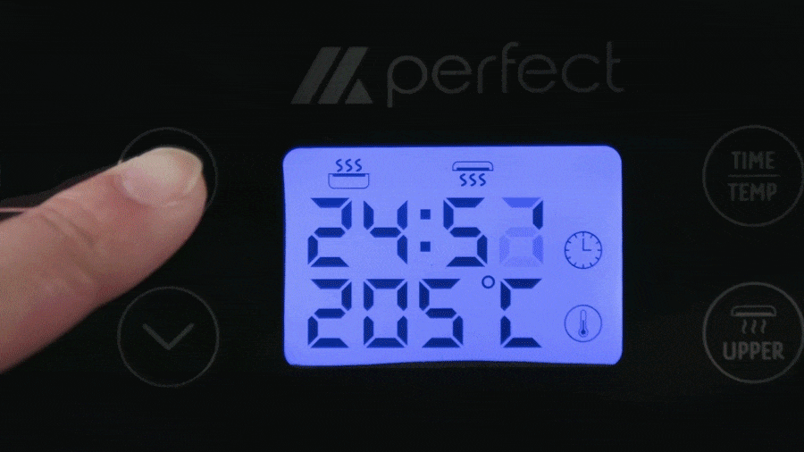
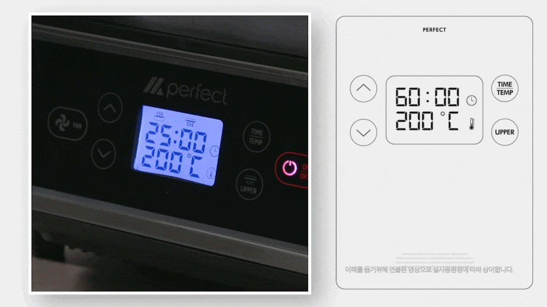
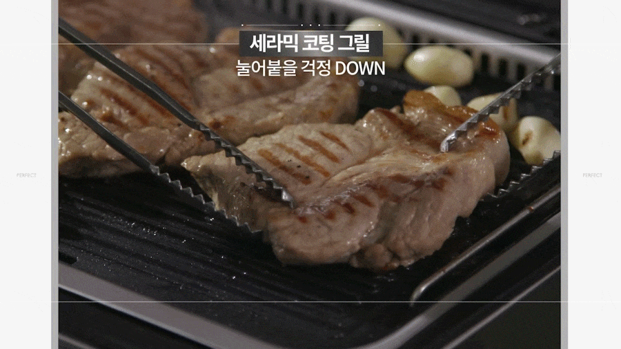
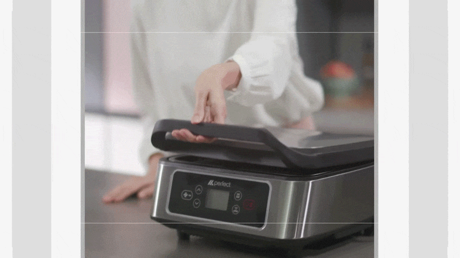
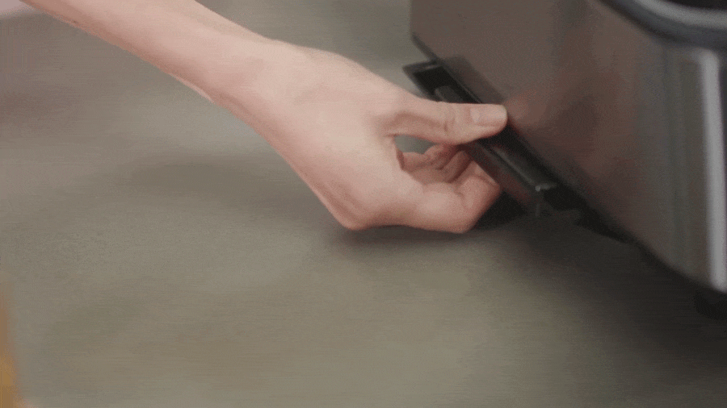

"이것이 바로 퍼펙트한 고기맛"
실패란 용납할수 없다!
고기맛을 제대로 굽다!
- #퍼펙트 양면 그릴
- #자동 높낮이 조절
- #고기 두께 OK(5~40mm)
- #공기순환 필터 일체형 그릴팬
- #세라믹 코팅
- #손쉬운 버튼 조절
- 편리한 분리세척
1. 뒤집을 필요없는 양면 상하그릴
자꾸 뒤집지 말라! 뒤집을 필요없이 양면 상하그릴로 한 번에 골고루 빠르게!


재료 두께에 따라 높낮이 자동 조절되는 밀착 그릴링


강력한 팬 작동을 통해 그릴내 공기순환통로 연기와 수증기를
순환시키고 후면 필터를 통해 배출하여 연기와 냄새를 최소화


온도 조절(60도~최대230도)/시간 조절 (1분~최대60분)


뚜껑 닫고 요리해 고기의 육즙을 유지하고 기름이 외부로 튀는 것을 최소화


고기 먹을때 마다 눌러붙는 경험은 이제 그만! 세라믹 코팅으로 걱정 끝~


설거지 고민 끝, 기름 받이 트레이로 기름 배출하여 편리한 분리세척 가능!


- 삼겹살 구이
- 대창 구이
- 닭다리 구이
- 소시지, 꼬치구이
- 고등어 구이
- 통오징어 구이
- 새우 구이
- 양갈비 구이
- 등심 스테이크
퍼펙트 그릴, 이런분들께 추천합니다!
- "캠핑과 아웃도어 활동을 즐기는 분"
- "홈파티를 자주 여는 요리 애호가"
- "간편하고 깔끔한 조리를 원하는분"
- "효율적인 주방 도구를 찾는 1~2인 가구"
"이제 더이상 고민하지 마세요.
당신에게 딱 맞는 퍼펙트 그릴입니다."

퍼펙트 그릴, 어떻게 사용하는 건가요?
1.조립하기손쉬운 조립으로 보관과 빠른 조리가 용이합니다.

2. 버튼 조작하기
시간/온도 설정을 버튼으로 쉽게 하실 수 있습니다.


3. 기름 버리기
하단부 기름트레이로 손쉽게 기름 버리기를 할수 있습니다.

제품사양
퍼펙트 그릴(SDB01S)- ·뒤집을 필요 없는 양면 상하그릴
- ·높낮이 자동 조절 리프트 스프링
- ·자동 밀착 그릴링
- ·고기두께 5~40mm
- ·공기순환 필터 일체형 그릴팬
- ·연기, 기름, 증기흡입, 필터링 배출
- ·버튼식 온도 조절(60~최대 230도)
- ·버튼식 시간 조절(1분~최대 60분)
- ·세라믹 코팅 그릴
- ·기름받이 트레이
- ·편리한 분리세척
| 품명 / 모델명 | 퍼펙트 그릴 / SDB01S |
|---|---|
| 제품구성 |
제품 본체, 외부 기름 받침대, 전원선, 하부 그릴, 상부 그릴, 덮개(뚜껑) |
| 크기 / 무게 | 348 × 365 × 201mm / 5.95kg |
| 상하 그릴팬사이즈 | 277 × 228mm |
| 필터 사이즈 | 177 × 34 × 10mm |
| 정격전압 | (220~240)V, (50~60)Hz |
| 소비전력 | 1300W |
| 안전인증번호 | SU072049-24001 |
| 전자파적합필증 | R-R-Krl-SDB01S |
| 제조자 / 제조국 |
Zhongshan Jinuang Household Appliance Manufacture Co, Ltd / 중국 |
자주 묻는 질문
-
Q. A/S는 어떻게 하나요?
A. 본사에서 1년강 무상 A/S가 가능합니다. -
Q. 그릴 팬 세척은 어떻게 하나요?
A. 본체 분리 후 중성세제를 사용하여 뜨거운 물에 부드러운 스펀지로
세척 가능하며, 식기 세척기 사용도 가능합니다. -
Q. 얇은 고기나 두꺼운 고기 둘 다 사용이 가능한가요?
A. 특허받은 스프링 플레이트 설계로 0.5~4cm 정도의 고기, 생선등
다양한 요리를 뒤집지않고 한번에 조리가 가능합니다. -
Q. 공기순환 팬 분해가 가능한가요?
A. 퍼펙트 그릴은 기름을 별도 기름 받이로 분리하고 튀는 기름은
벽면에 흡착되기 때문에 사용 후 한 번만 닦아내 주시면 되고
공기순환 팬은 기름이 끼지 않도록 설계되어 별도의 분리 및 세척이
필요하지 않습니다. -
Q. 하단 열선만 사용이 가능한가요?
A. 하단 열선은 기본적으로 사용이 가능하며, 상단 열선은 선택하여
사용할 수 있습니다.